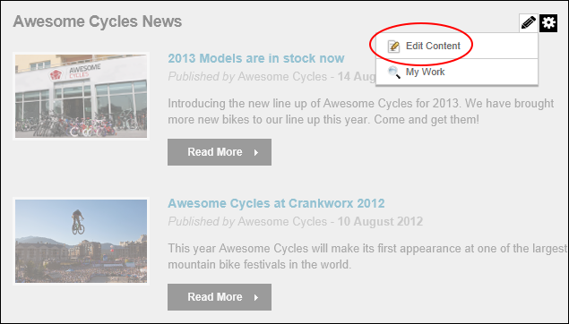
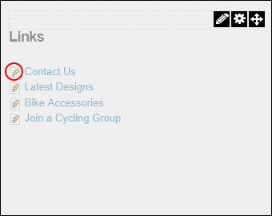

Editing Module Content
How to edit module content. This topic demonstrates how content is typically edited on modules, however this is not applicable to all modules. For detailed information on editing content for individual module types, see the "Installed Modules" and "Available Modules" sections.
Editing modules with a single content record
How to edit the content of modules that only have one content record such as the HTML, HTML Pro and IFrame modules.
Tip: Inline Editing may be available for the HTML/HTML Pro module. See "Editing Content Inline"
- Mouse over the Edit button in the module action menu. This displays the editing options that are available to the current user.
- Select the
 Edit option displayed for the module. The name beside the button will change depending on the module. For Example, Edit Content is displayed for the HTML/HTML Pro modules however Banner Options is displayed for the Banners module.
Edit option displayed for the module. The name beside the button will change depending on the module. For Example, Edit Content is displayed for the HTML/HTML Pro modules however Banner Options is displayed for the Banners module.

- Edit the fields.
-
Click the OK button to confirm.
Editing modules with multiple records
How to edit the content of modules that have multiple records such as the Announcements and Links modules:
- Click the Edit
 button located beside the content to be edited. This opens the edit page for this module.
button located beside the content to be edited. This opens the edit page for this module.

- Edit the fields.
-
Click the OK button to confirm.
-
See "About Module Settings"
-
See "Editing Reference Modules"